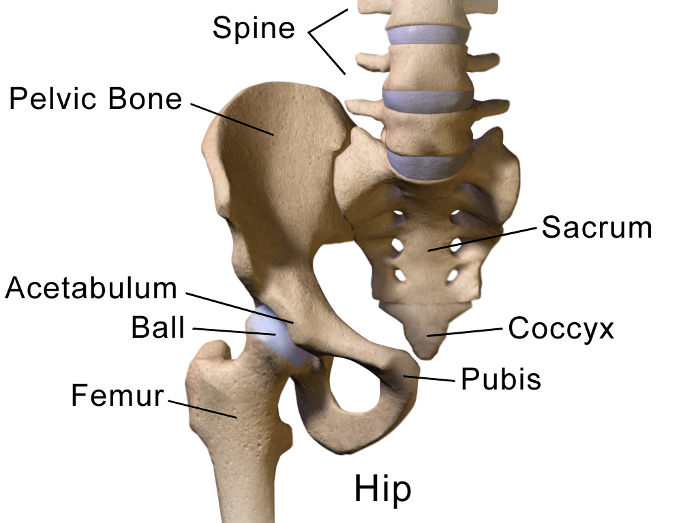
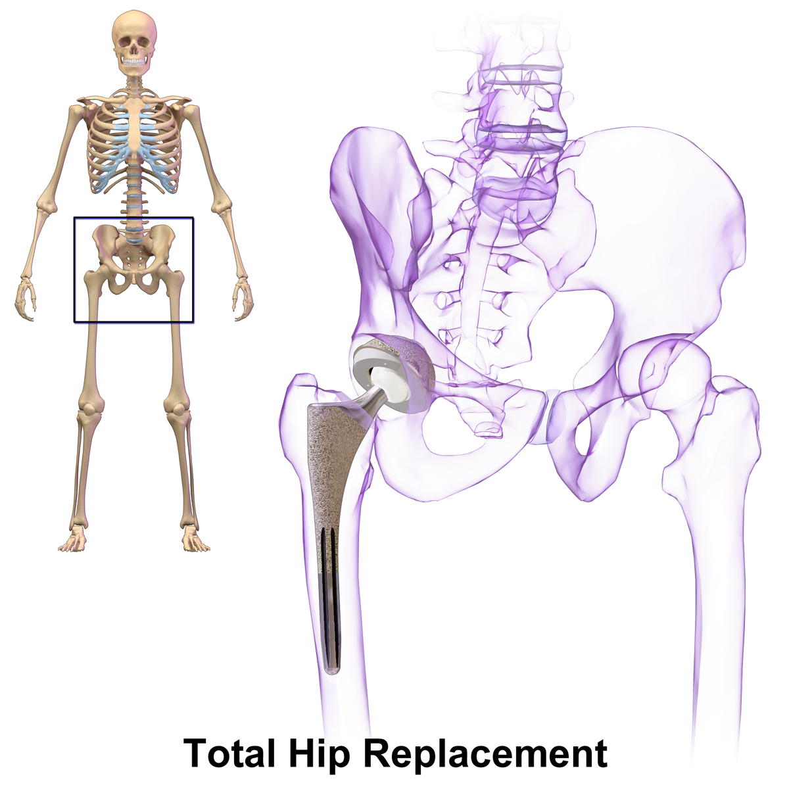
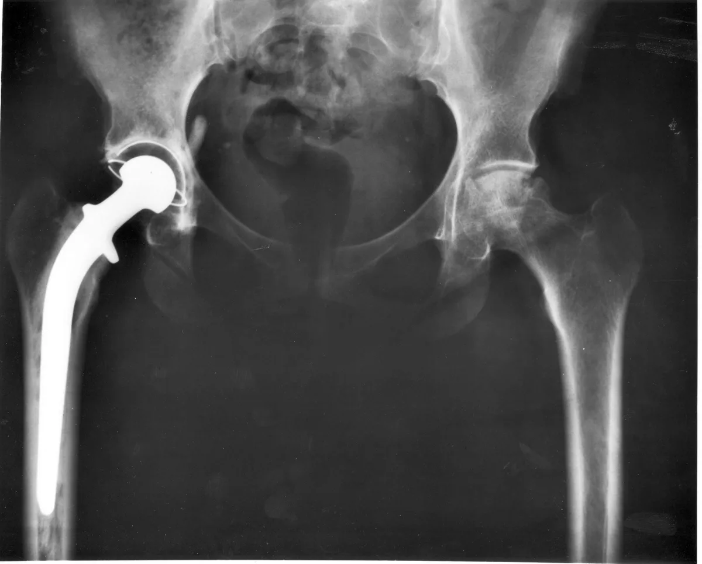

Видео: замена тазобедренного сустава передним доступом — восстановление
Главы видео
Для кого эта страница
Эта страница предназначена для людей, которым уже заменили тазобедренный сустав передним доступом. Здесь собрана общая информация о восстановлении и возможных осложнениях. Указания вашего хирурга, физиотерапевта и медицинской команды с учётом вашей операции имеют приоритет.
Источник: NICE, 2020 (NG157); AAOS OrthoInfo
Что такое передний доступ
Передний доступ означает, что хирург подходит к тазобедренному суставу спереди, обычно используя промежуток между мышцами. При этом мягкие ткани всё равно раздвигают и перемещают; отсутствие их повреждения гарантировать нельзя. При других доступах к суставу подходят сзади или сбоку. Тип и компоненты эндопротеза подбираются отдельно с учётом анатомии и клинической ситуации, а не только хирургического доступа.
Согласно рекомендациям Американской академии ортопедических хирургов 2023 года, нет одного доступа, который был бы лучшим для всех пациентов. Каждый имеет свои преимущества и риски. Выбор обсуждается пациентом и хирургом с учётом медицинских особенностей и опыта хирурга.
Источник: AAOS, 2023; AAOS OrthoInfo
Тазобедренный сустав

Эндопротез тазобедренного сустава


Чего ожидать при восстановлении
В метаанализе 24 рандомизированных исследований 2023 года пациенты после переднего доступа в среднем имели лучшие показатели функции примерно через 6 недель по сравнению с задним доступом. К более поздним срокам различия обычно уменьшались. Средняя продолжительность госпитализации по сравнению с задним доступом была короче примерно на 0,33 суток, то есть около 8 часов; это средняя разница в исследованиях, а не обещание более ранней выписки.
В этих исследованиях не выявили статистически значимой разницы по вывихам, переломам около протеза и венозным тромбозам. Это не означает, что риски точно одинаковы: редкие осложнения требуют более крупных исследований.
Источник: Meta-analysis of RCTs, 2023; AAOS, 2023
Как восстанавливаться
Если состояние позволяет, реабилитацию и помощь с первыми шагами обычно предлагают уже в день операции или в течение следующих 24 часов. Уровень допустимой нагрузки на ногу, необходимость ходунков или костылей и программу упражнений определяет ваша медицинская команда. Постепенно увеличивайте активность по её рекомендациям и избегайте падений.
Принимайте назначенные после операции лекарства, в том числе препараты для профилактики тромбозов, строго по выписке. Не отменяйте их самостоятельно. Уход за раной, повязкой и сроки контрольного осмотра также определяются вашими индивидуальными рекомендациями.
Источник: NICE, 2020 (NG157); AAOS OrthoInfo
Возможные осложнения
После переднего доступа иногда возникают онемение, покалывание или жжение кожи по передне-наружной поверхности бедра. Это может быть связано с раздражением латерального кожного нерва бедра. Он отвечает за чувствительность кожи, поэтому его изолированное повреждение само по себе не вызывает мышечной слабости. У многих ощущения постепенно уменьшаются, но у части пациентов сохраняются.
Возможны нарушения заживления раны, инфекция, повреждения нервов, перелом, вывих и тромбоз — как и после других вариантов эндопротезирования. Некоторые сравнительные обзоры находили больше раневых или нервных осложнений при переднем доступе, однако результаты зависят от исследований и опыта хирургической команды. Нет оснований считать этот доступ полностью безопасным или опасным для всех пациентов.
Источник: Meta-analysis of RCTs, 2023; Meta-analysis, 2022; Systematic review, 2021; AAOS, 2023
Движения и ограничения
После замены тазобедренного сустава ограничения движений зависят от хирургического доступа, устойчивости протеза и особенностей пациента. Исследования после заднего доступа показали, что стандартные ограничения не продемонстрировали убедительного снижения риска вывиха у изученных групп пациентов; уверенность в этих данных ограничена. Эти результаты нельзя автоматически переносить на вашу операцию.
После переднего доступа некоторым пациентам разрешают больше движений, но это не означает, что всем можно сразу скрещивать ноги, садиться на низкие стулья, чрезмерно поворачивать или отводить бедро. До выписки уточните у хирурга или физиотерапевта ваши конкретные ограничения и срок их действия. Не отменяйте их самостоятельно.
Источник: Korfitsen et al., 2023; Chan et al., 2025; RCT, 2020; AAOS OrthoInfo
Подробнее: Дома после замены тазобедренного сустава: приспособления и безопасные движения
Когда срочно обратиться за помощью
В тот же день свяжитесь с вашим хирургическим отделением или хирургом, если появились постоянная или нарастающая температура, озноб, усиливающиеся покраснение, припухлость или боль вокруг раны, новые выделения из раны либо нарастающая боль в области протеза. Если не удаётся связаться с хирургической командой или симптомы выраженные либо быстро нарастают, обратитесь в приёмное отделение больницы. При новой боли, покраснении, повышении температуры кожи или отёке икры или бедра, особенно с одной стороны, немедленно обратитесь в приёмное отделение — это могут быть признаки тромбоза.
Немедленно вызывайте скорую помощь по номеру 101 («Маген Давид Адом») при внезапной одышке, боли в груди или потере сознания. Внезапная сильная боль в тазобедренном суставе, заметное изменение положения ноги или невозможность опереться на неё могут указывать на вывих либо перелом: не пытайтесь вправлять сустав или ходить через боль, срочно обратитесь за экстренной медицинской помощью.
Источник: AAOS OrthoInfo
Перед выпиской
Перед выпиской проверьте, что у вас есть письменные рекомендации: допустимая нагрузка на ногу, ограничения движений, упражнения, лекарства, уход за раной, дата контроля и контакт для вопросов. Если какой-то пункт неясен, уточните его у медицинской команды до ухода домой.
Источник: NICE, 2020 (NG157)
Лестница с тростью
Первые часы после операции: как помочь и не помешать
- Особое время. Первые часы и первые сутки после операции — время, когда за человеком наблюдают особенно внимательно. Чаще всего всё идёт спокойно, но иногда помощь нужна очень быстро. Поэтому проход к пациенту и медицинскому оборудованию всегда должен оставаться свободным.
- Медсестра проверяет. После возвращения в отделение медсестра регулярно проверяет давление, пульс, частоту дыхания, насыщение крови кислородом, температуру и уровень сознания, а также осматривает область операции. В нашем отделении обычно так: сразу при поступлении из операционной, затем через час, ещё через час, затем через два часа, а дальше каждые четыре часа в течение первых суток. При необходимости проверки делают чаще. Это плановое наблюдение и не обязательно означает, что что-то не так. Если назначен эноксапарин (Клексан), после некоторых ортопедических операций в нашем отделении первый послеоперационный укол обычно делают примерно через двенадцать часов. Время определяет врач с учётом остановки кровотечения, вида операции и спинальной или эпидуральной анестезии.
- Свободный проход. Пожалуйста, оставляйте свободный проход к кровати со всех сторон. Не ставьте стулья и сумки вплотную к кровати и в проходе. К пациенту должны быстро подойти медсестра, врач и подъехать тележка с лекарствами и оборудованием.
- Меньше людей — лучше. Лучше, если одновременно рядом с пациентом будет не больше одного-двух близких, если это допускают правила отделения. Когда персонал подходит к пациенту, пожалуйста, освободите место. Если вас попросили выйти из палаты, выполните просьбу. Позже можно уточнить причину и задать вопросы.
- Только с разрешения. После наркоза бывают тошнота и рвота, а ослабленный человек может поперхнуться. После операции не давайте пациенту еду и питьё без разрешения медсестры. Когда пациент достаточно проснулся, может безопасно глотать и нет других ограничений, ему могут разрешить пить и есть. Иногда начинают с небольшого количества воды, затем переходят к еде. Когда и что можно, решает медицинская команда.
- Борта и кнопка. Борта кровати поднимают по решению персонала, с учётом состояния пациента. Они подходят не всем и не заменяют помощь при вставании. Не поднимайте и не опускайте борта самостоятельно. Кнопка вызова должна быть под рукой. Вставайте только с разрешения медицинской команды, первый раз — с помощью персонала.
- Если что-то не так. Если пациента тошнит, ему трудно дышать, он стал необычно сонливым, его трудно разбудить, появилась внезапная спутанность сознания или сильное беспокойство, боль резко усилилась либо повязка быстро пропитывается кровью — немедленно позовите медсестру. Нажмите кнопку вызова, а при тяжёлом состоянии громко зовите персонал. Не давайте самостоятельно еду, питьё или лекарства и не пытайтесь поднимать пациента.
Защита от инфекции в больнице: что могут сделать пациент и близкие
- Чистые руки. Обрабатывайте руки антисептиком или мойте с мылом при входе в палату и выходе из неё, до и после прикосновения к пациенту. После туалета, перед едой и при видимом загрязнении мойте руки водой с мылом. Антисептик обычно есть у входа в палату или у кровати. Можно вежливо попросить персонал обработать руки перед осмотром — это нормально.
- Рана и трубки. Не трогайте рану, повязку, дренаж, катетер и капельницу и не снимайте повязку сами. Если повязка намокла, загрязнилась или сползла, скажите медсестре.
- Чужое не трогать. Не садитесь на чужие кровати, не трогайте оборудование, раны и вещи других пациентов.
- Не заходите в чужие палаты. Без необходимости не ходите по другим палатам и отделениям больницы. Близким с температурой, кашлем, насморком, рвотой или поносом лучше не приходить, пока они не выздоровеют.
- Устойчивые бактерии. Некоторые бактерии устойчивы к антибиотикам. Если у пациента обнаружили такие бактерии, персонал может назначить дополнительные меры защиты: изоляцию, использование халатов и перчаток, особые правила посещения. Конкретные меры зависят от вида бактерии и ситуации. Если персонал сообщил об особых мерах предосторожности, строго выполняйте инструкции — это помогает защищать пациентов и близких.
- Повышенный риск. Особенно внимательно соблюдайте меры профилактики при открытых переломах, значительном повреждении мягких тканей, наружном фиксирующем аппарате (спицы или стержни проходят через кожу в кость), диабете и после сложных или длительных операций. В этих ситуациях риск инфекционных осложнений может быть выше.
- Сразу сообщите медсестре, если: появились температура или озноб; покраснение, усиливающаяся боль, отёк или выделения из раны; покраснение или выделения вокруг мест входа спиц или стержней наружного фиксатора либо вокруг места установки внутривенного катетера.
Источники
- AAOS, 01.12.2023, Management of Osteoarthritis of the Hip, CPG, рекомендации по НПВП и хирургическому доступу, с. 8, 34–35
- NICE, 2020, NG157, Joint replacement (primary): hip, knee and shoulder, пп. 1.1.2–1.1.4, 1.10.1
- AAOS OrthoInfo, Total Hip Replacement, восстановление, тромбоз, инфекция, ограничения
- Comparing direct anterior approach versus posterior/lateral approach, European Journal of Orthopaedic Surgery & Traumatology 2023, метаанализ 24 РКИ / 2010 участников; PMID 37010580
- The risk of hospital readmission, revision and complications, Hip International, онлайн 2022, печать 2023, метаанализ 11 562 пациентов; PMID 35437055
- The learning curve for the direct anterior total hip arthroplasty, systematic review, 2021; PMID 33629172
- Korfitsen CB et al., Acta Orthopaedica 2023, systematic review/meta-analysis, 8 835 после заднего доступа; DOI 10.2340/17453674.2023.11958
- Chan PHA et al., Journal of Orthopaedics, Trauma and Rehabilitation 2025, scoping review по ограничениям после заднего доступа
- Prospective randomized trial, 2020, hip precautions после заднего доступа, 594 сустава; PMID 32146109
- Маген Давид Адом — официальный сайт
הסרטון בהכנה ויופיע כאן בקרוב.
למי מיועד הדף
הדף מיועד למי שכבר עברו החלפת מפרק ירך בגישה קדמית. כאן מובא מידע כללי על ההחלמה ועל סיבוכים אפשריים. ההוראות האישיות של המנתח, הפיזיותרפיסט והצוות המטפל, בהתאם לניתוח שעברתם, הן הקובעות.
מקור: NICE, 2020 (NG157); AAOS OrthoInfo
מהי גישה קדמית
בגישה הקדמית המנתח מגיע למפרק הירך מלפנים, בדרך כלל דרך מרווח בין שרירים. גם בגישה זו יש צורך להרחיק ולהסיט רקמות רכות, ואי אפשר להבטיח שלא ייגרם להן נזק. בגישות אחרות מגיעים למפרק מאחור או מהצד. סוג התותבת ורכיביה נבחרים בנפרד לפי המבנה האנטומי והמצב הרפואי, ולא רק לפי הגישה הניתוחית.
לפי הנחיות האקדמיה האמריקאית למנתחים אורתופדים משנת 2023, אין גישה אחת הטובה ביותר לכל המטופלים. לכל גישה יתרונות וסיכונים. הבחירה נעשית בדיון משותף בין המטופל למנתח, בהתאם למצב הרפואי ולניסיון המנתח.
מקור: AAOS, 2023; AAOS OrthoInfo
מפרק הירך
תותבת של מפרק הירך
למה לצפות בהחלמה
במטא־אנליזה משנת 2023 שכללה 24 מחקרים אקראיים נמצא כי לאחר גישה קדמית היו בממוצע מדדי תפקוד טובים יותר כעבור כ־6 שבועות בהשוואה לגישה אחורית. בהמשך ההחלמה ההבדלים בדרך כלל הצטמצמו. משך האשפוז הממוצע היה קצר בכ־0.33 יממה לעומת הגישה האחורית, כלומר בכ־8 שעות. זהו ממוצע מחקרי ולא הבטחה לשחרור מוקדם יותר.
במחקרים אלה לא זוהה הבדל מובהק סטטיסטית בשיעורי פריקות, שברים סביב התותבת או פקקת ורידים. אין בכך כדי להוכיח שהסיכונים זהים: כדי להעריך סיבוכים נדירים דרושים מחקרים גדולים יותר.
מקור: Meta-analysis of RCTs, 2023; AAOS, 2023
איך מחלימים
אם מצבכם מאפשר זאת, בדרך כלל מציעים שיקום וסיוע בצעדים הראשונים כבר ביום הניתוח או בתוך 24 השעות שלאחריו. הצוות המטפל קובע כמה מותר להעמיס על הרגל, אם יש צורך בהליכון או בקביים ומהי תוכנית התרגול שלכם. הגבירו פעילות בהדרגה בהתאם להוראות והקפידו למנוע נפילות.
קחו את התרופות שנרשמו לאחר הניתוח, כולל תרופות למניעת קרישי דם, בדיוק לפי מכתב השחרור. אל תפסיקו אותן על דעת עצמכם. גם הטיפול בפצע ובחבישה ומועד הביקורת נקבעים לפי ההנחיות האישיות שקיבלתם.
מקור: NICE, 2020 (NG157); AAOS OrthoInfo
סיבוכים אפשריים
לאחר גישה קדמית עלולים להופיע חוסר תחושה, עקצוץ או תחושת צריבה בעור בחלק הקדמי־צידי של הירך. הדבר עשוי להיות קשור לגירוי של העצב העורי הצידי של הירך. עצב זה אחראי לתחושת העור, ולכן פגיעה מבודדת בו אינה גורמת כשלעצמה לחולשת שרירים. אצל רבים התחושות פוחתות בהדרגה, אך אצל חלק מהמטופלים הן נמשכות.
כמו בגישות אחרות להחלפת מפרק, ייתכנו בעיות בריפוי הפצע, זיהום, פגיעה בעצבים, שבר, פריקה ופקקת. בחלק מהסקירות ההשוואתיות נמצאו יותר סיבוכי פצע או עצב בגישה קדמית, אך התוצאות תלויות במחקרים ובניסיון הצוות המנתח. אין הצדקה להציג גישה זו כבטוחה לחלוטין או כמסוכנת לכל המטופלים.
מקור: Meta-analysis of RCTs, 2023; Meta-analysis, 2022; Systematic review, 2021; AAOS, 2023
תנועות והגבלות
לאחר החלפת מפרק ירך, ההגבלות על התנועה תלויות בגישה הניתוחית, ביציבות התותבת ובמאפייני המטופל. מחקרים לאחר גישה אחורית הראו שהגבלות שגרתיות לא הדגימו הפחתה משכנעת בסיכון לפריקה בקבוצות שנחקרו; רמת הוודאות של הראיות מוגבלת. אי אפשר להחיל את הממצאים האלה אוטומטית על הניתוח שלכם.
אחרי גישה קדמית מאפשרים לחלק מהמטופלים טווח תנועות רחב יותר, אך אין פירוש הדבר שמותר לכולם מיד לשלב רגליים, לשבת על כיסאות נמוכים, לסובב או להרחיק את הירך בצורה קיצונית. לפני השחרור בררו עם המנתח או הפיזיותרפיסט אילו הגבלות חלות עליכם ולכמה זמן. אל תבטלו אותן על דעת עצמכם.
מקור: Korfitsen et al., 2023; Chan et al., 2025; RCT, 2020; AAOS OrthoInfo
להרחבה: בבית אחרי החלפת מפרק הירך: אביזרי עזר ותנועות בטוחות
מתי לפנות לעזרה בדחיפות
פנו עוד באותו יום למחלקה המנתחת או למנתח אם מופיעים חום מתמשך או עולה, צמרמורות, אודם, נפיחות או כאב שמחמירים סביב הפצע, הפרשה חדשה מהפצע או כאב מתגבר באזור התותבת. אם אינכם מצליחים להשיג את הצוות המנתח, או שהתסמינים חמורים או מחמירים במהירות — פנו למיון בבית החולים. אם מופיעים כאב חדש, אודם, חום מקומי או נפיחות בשוק או בירך, בעיקר בצד אחד — פנו מיד למיון. אלה עלולים להיות סימנים לפקקת.
הזעיקו מיד אמבולנס של מגן דוד אדום בטלפון 101 במקרה של קוצר נשימה פתאומי, כאב בחזה או אובדן הכרה. כאב פתאומי וחזק במפרק הירך, שינוי ברור במנח הרגל או חוסר יכולת לדרוך עליה עלולים להעיד על פריקה או שבר: אל תנסו להחזיר את המפרק למקומו או ללכת למרות הכאב; פנו בדחיפות לטיפול רפואי דחוף.
מקור: AAOS OrthoInfo
לפני השחרור
לפני השחרור ודאו שקיבלתם הוראות כתובות הכוללות את מידת הדריכה המותרת, הגבלות תנועה, תרגילים, תרופות, טיפול בפצע, מועד ביקורת ופרטי קשר לשאלות. אם סעיף כלשהו אינו ברור, בררו אותו עם הצוות המטפל לפני החזרה הביתה.
מקור: NICE, 2020 (NG157)
מדרגות עם מקל
השעות הראשונות אחרי הניתוח: איך לעזור ולא להפריע
- זמן מיוחד. השעות הראשונות והיממה הראשונה אחרי ניתוח הן זמן שבו עוקבים אחרי המטופל בתשומת לב מיוחדת. ברוב המקרים הכול עובר בשקט, אבל לפעמים צריך עזרה מהר מאוד. לכן הדרך אל המטופל ואל הציוד הרפואי צריכה להישאר פנויה תמיד.
- האחות בודקת. אחרי החזרה למחלקה, האחות בודקת באופן קבוע לחץ דם, דופק, קצב נשימה, ריווי חמצן בדם, חום ורמת הכרה, ובודקת גם את אזור הניתוח. במחלקה שלנו בדרך כלל כך: מיד בקבלה מחדר הניתוח, אחר כך אחרי שעה, אחרי עוד שעה, אחר כך אחרי שעתיים, ומשם כל ארבע שעות במשך היממה הראשונה. בעת הצורך בודקים לעיתים קרובות יותר. זה מעקב מתוכנן, והוא לא בהכרח אומר שמשהו לא בסדר. אם נרשם אנוקספרין, קלקסן, אחרי חלק מהניתוחים האורתופדיים במחלקה שלנו הזריקה הראשונה שלאחר הניתוח ניתנת בדרך כלל כשתים עשרה שעות אחרי הניתוח. הרופא קובע את המועד לפי מצב הדימום, סוג הניתוח וההרדמה הספינלית או האפידורלית.
- מעבר פנוי. בבקשה, השאירו מעבר פנוי למיטה מכל הצדדים. אל תעמידו כיסאות ותיקים צמוד למיטה ובמעבר. האחות והרופא צריכים להגיע מהר אל המטופל, ועגלת התרופות והציוד צריכה להגיע עד אליו.
- פחות אנשים, יותר טוב. עדיף שליד המטופל יהיו בו זמנית לא יותר מאחד או שניים מבני המשפחה, אם נהלי המחלקה מאפשרים זאת. כשהצוות ניגש למטופל, בבקשה פנו מקום. אם ביקשו מכם לצאת מהחדר, עשו זאת. אחר כך אפשר לשאול על הסיבה ולשאול שאלות.
- רק באישור. אחרי הרדמה יכולות להיות בחילה והקאה, ואדם חלש עלול להיחנק. אחרי ניתוח אל תתנו למטופל אוכל ושתייה בלי אישור של האחות. כשהמטופל ער מספיק, יכול לבלוע בבטחה ואין הגבלות אחרות, ירשו לו לשתות ולאכול. לפעמים מתחילים בכמות קטנה של מים ואחר כך עוברים לאוכל. מתי ומה מותר, הצוות הרפואי מחליט.
- מעקות וכפתור. את מעקות המיטה מרימים לפי החלטת הצוות, בהתאם למצב המטופל. הם לא מתאימים לכולם ולא מחליפים עזרה בקימה. אל תרימו ואל תורידו את המעקות בעצמכם. כפתור הקריאה צריך להיות בהישג יד. קמים רק באישור הצוות הרפואי, ובפעם הראשונה בעזרת הצוות.
- אם משהו לא בסדר. אם למטופל יש בחילה, קשה לו לנשום, הוא ישנוני באופן חריג, קשה להעיר אותו, הופיע בלבול פתאומי או אי שקט חזק, הכאב התגבר מאוד, או שהחבישה נספגת בדם במהירות, קראו מיד לאחות. לחצו על כפתור הקריאה, ובמצב קשה קראו לצוות בקול רם. אל תתנו בעצמכם אוכל, שתייה או תרופות, ואל תנסו להרים את המטופל.
מניעת זיהומים בבית החולים: מה יכולים לעשות המטופל והמשפחה
- ידיים נקיות. חטאו ידיים בתכשיר לחיטוי ידיים או רחצו אותן במים וסבון בכניסה לחדר וביציאה ממנו, לפני ואחרי מגע במטופל. אחרי השירותים, לפני האוכל וכשהידיים מלוכלכות באופן נראה לעין, רחצו ידיים במים וסבון. תכשיר לחיטוי ידיים נמצא בדרך כלל בכניסה לחדר או ליד המיטה. אפשר לבקש בנימוס מהצוות לחטא ידיים לפני הבדיקה.
- פצע וצינורות. אל תגעו בפצע, בחבישה, בנקז, בקטטר ובעירוי, ואל תסירו את החבישה בעצמכם. אם החבישה נרטבה, התלכלכה או זזה, ספרו לאחות.
- לא לגעת בשל אחרים. אל תשבו על מיטות של מטופלים אחרים, ואל תגעו בציוד, בפצעים ובחפצים שלהם.
- לא להיכנס לחדרי מטופלים אחרים. אל תסתובבו ללא צורך בחדרים ובמחלקות אחרות בבית החולים. בני משפחה עם חום, שיעול, נזלת, הקאות או שלשול, עדיף שלא יבואו לבקר עד שיחלימו.
- חיידקים עמידים. יש חיידקים שעמידים לאנטיביוטיקה. אם נמצאו חיידקים כאלה אצל המטופל, הצוות עשוי להורות על אמצעי זהירות נוספים: בידוד, שימוש בחלוקים ובכפפות וכללים מיוחדים לביקורים. האמצעים נקבעים לפי סוג החיידק והמצב. אם הצוות הודיע על הנחיות מיוחדות, הקפידו לפעול לפיהן כדי להגן על המטופלים ועל בני המשפחה.
- סיכון מוגבר. חשוב במיוחד להקפיד על מניעת זיהומים בשברים פתוחים, בפגיעה משמעותית ברקמות הרכות, בקיבוע חיצוני (פינים או חוטי מתכת שעוברים דרך העור אל העצם), בסוכרת ואחרי ניתוחים מורכבים או ממושכים. במצבים אלה הסיכון לסיבוכים זיהומיים עלול להיות גבוה יותר.
- דווחו מיד לאחות אם: הופיעו חום או צמרמורת; אודם, כאב שמתגבר, נפיחות או הפרשה מהפצע; אודם או הפרשה סביב מקומות כניסת הפינים או חוטי המתכת של הקיבוע החיצוני, או סביב מקום כניסת העירוי לווריד.
מקורות
- AAOS, Dec 1, 2023, Management of Osteoarthritis of the Hip, CPG, recommendations on NSAIDs and surgical approach, pp. 8, 34–35
- NICE, 2020, NG157, Joint replacement (primary): hip, knee and shoulder, sections 1.1.2–1.1.4, 1.10.1
- AAOS OrthoInfo, Total Hip Replacement, recovery, blood clots, infection, restrictions
- Comparing direct anterior approach versus posterior/lateral approach, European Journal of Orthopaedic Surgery & Traumatology 2023, meta-analysis of 24 RCTs / 2010 participants; PMID 37010580
- The risk of hospital readmission, revision and complications, Hip International, online 2022, print 2023, meta-analysis of 11,562 patients; PMID 35437055
- The learning curve for the direct anterior total hip arthroplasty, systematic review, 2021; PMID 33629172
- Korfitsen CB et al., Acta Orthopaedica 2023, systematic review/meta-analysis, 8,835 after the posterior approach; DOI 10.2340/17453674.2023.11958
- Chan PHA et al., Journal of Orthopaedics, Trauma and Rehabilitation 2025, scoping review on restrictions after the posterior approach
- Prospective randomized trial, 2020, hip precautions after the posterior approach, 594 joints; PMID 32146109
- מגן דוד אדום — official website
الفيديو قيد الإعداد وسيظهر هنا قريبًا.
لمن هذه الصفحة
هذه الصفحة مخصصة لمن خضعوا بالفعل لاستبدال مفصل الورك بالمدخل الأمامي. وهي تقدم معلومات عامة عن التعافي والمضاعفات المحتملة. تبقى التعليمات الفردية التي يقدمها الجرّاح وأخصائي العلاج الطبيعي والفريق الطبي، بحسب تفاصيل عمليتكم، هي المرجع الأساسي.
المصدر: NICE, 2020 (NG157); AAOS OrthoInfo
ما هو المدخل الأمامي
في المدخل الأمامي يصل الجرّاح إلى مفصل الورك من الأمام، وعادةً عبر المسافة بين العضلات. ومع ذلك، لا بد من إبعاد الأنسجة الرخوة وتحريكها، ولا يمكن ضمان عدم تعرضها لأي أذى. وفي المداخل الأخرى يُوصل إلى المفصل من الخلف أو الجانب. يُختار نوع المفصل الصناعي ومكوّناته على حدة وفق التشريح والحالة الطبية، وليس بناءً على المدخل الجراحي وحده.
وفق إرشادات الأكاديمية الأمريكية لجرّاحي العظام لعام 2023، لا يوجد مدخل جراحي واحد هو الأفضل لجميع المرضى؛ فلكل مدخل مزايا ومخاطر. وتُناقش الخيارات بين المريض والجرّاح مع مراعاة الحالة الطبية وخبرة الجرّاح.
المصدر: AAOS, 2023; AAOS OrthoInfo
مفصل الورك
مفصل ورك صناعي
ماذا تتوقعون خلال التعافي
وجد تحليل تلوي نُشر عام 2023 وشمل 24 تجربة عشوائية أن مؤشرات وظيفة المفصل بعد المدخل الأمامي كانت أفضل في المتوسط بعد نحو 6 أسابيع مقارنة بالمدخل الخلفي. وعادةً ما تقل الفروق مع تقدم التعافي. كانت مدة الإقامة في المستشفى أقصر في المتوسط بنحو 0.33 يوم مقارنة بالمدخل الخلفي، أي نحو 8 ساعات. وهذا متوسط في الدراسات، وليس وعدًا بالخروج المبكر من المستشفى.
لم تكشف تلك الدراسات عن فرق ذي دلالة إحصائية في معدلات خلع المفصل أو الكسور حول المفصل الصناعي أو الخثار الوريدي. لكن ذلك لا يثبت تساوي المخاطر تمامًا؛ فدراسة المضاعفات النادرة تحتاج إلى أعداد أكبر من المرضى.
المصدر: Meta-analysis of RCTs, 2023; AAOS, 2023
كيف تتعافون
إذا سمحت الحالة الصحية، يُعرض عادةً البدء بالتأهيل والمساعدة في الخطوات الأولى يوم العملية نفسه أو خلال 24 ساعة بعدها. يحدد الفريق الطبي مقدار الوزن المسموح تحميله على الساق، والحاجة إلى مشاية أو عكازات، وبرنامج التمارين المناسب لكم. زيدوا نشاطكم تدريجيًا وفق التعليمات واحرصوا على الوقاية من السقوط.
تناولوا الأدوية الموصوفة بعد العملية، بما فيها أدوية الوقاية من الجلطات، تمامًا كما هو مذكور في تقرير الخروج. لا توقفوها من تلقاء أنفسكم. وتُحدَّد العناية بالجرح والضماد وموعد المراجعة وفق التعليمات الفردية التي تلقيتموها.
المصدر: NICE, 2020 (NG157); AAOS OrthoInfo
المضاعفات المحتملة
قد يحدث بعد المدخل الأمامي خدر أو وخز أو إحساس بالحرقان في جلد الجزء الأمامي والجانبي من الفخذ. وقد يرتبط ذلك بتهيّج العصب الجلدي الوحشي للفخذ. هذا العصب مسؤول عن الإحساس في الجلد، ولذلك فإن إصابته المعزولة لا تسبب بحد ذاتها ضعف العضلات. تخف هذه الأحاسيس تدريجيًا لدى كثير من المرضى، لكنها قد تستمر لدى بعضهم.
كما في المداخل الأخرى لاستبدال المفصل، قد تحدث مشكلات في التئام الجرح، أو عدوى، أو إصابة عصبية، أو كسر، أو خلع، أو خثار. وقد وجدت بعض المراجعات المقارنة معدلات أعلى لمضاعفات الجروح أو الأعصاب مع المدخل الأمامي، لكن النتائج تختلف حسب الدراسات وخبرة الفريق الجراحي. ولا يصح وصف هذا المدخل بأنه آمن تمامًا أو خطير لجميع المرضى.
المصدر: Meta-analysis of RCTs, 2023; Meta-analysis, 2022; Systematic review, 2021; AAOS, 2023
الحركة والقيود
بعد استبدال مفصل الورك تعتمد قيود الحركة على المدخل الجراحي وثبات المفصل الصناعي والخصائص الفردية للمريض. أظهرت دراسات أُجريت بعد المدخل الخلفي أن القيود التقليدية لم تُثبت بصورة مقنعة خفض خطر الخلع لدى المجموعات المدروسة، لكن درجة اليقين في الأدلة محدودة. ولا يجوز تطبيق هذه النتائج تلقائيًا على عمليتكم.
قد يُسمح لبعض المرضى بعد المدخل الأمامي بمجال حركة أوسع، لكن هذا لا يعني أنه يُسمح للجميع فورًا بوضع ساق فوق الأخرى، أو الجلوس على كراسٍ منخفضة، أو تدوير الورك أو إبعاده إلى أقصى مدى. قبل الخروج من المستشفى اسألوا الجرّاح أو أخصائي العلاج الطبيعي عن القيود المحددة لكم ومدتها. لا توقفوا الالتزام بها من تلقاء أنفسكم.
المصدر: Korfitsen et al., 2023; Chan et al., 2025; RCT, 2020; AAOS OrthoInfo
للمزيد: في البيت بعد استبدال مفصل الورك: أدوات مساعدة وحركات آمنة
متى تطلبون المساعدة بشكل عاجل
اتصلوا بالقسم الجراحي أو بالجرّاح في اليوم نفسه إذا ظهرت حمى مستمرة أو متزايدة، أو قشعريرة، أو احمرار أو تورم أو ألم يزداد حول الجرح، أو إفرازات جديدة من الجرح، أو ألم متزايد في منطقة المفصل الصناعي. إذا لم تتمكنوا من التواصل مع الفريق الجراحي، أو كانت الأعراض شديدة أو تتفاقم بسرعة، توجّهوا إلى قسم الطوارئ في المستشفى. وعند ظهور ألم جديد أو احمرار أو سخونة أو تورم في ربلة الساق أو الفخذ، خاصةً في جهة واحدة، توجّهوا فورًا إلى قسم الطوارئ؛ فقد تكون هذه علامات خثار وريدي.
اتصلوا فورًا بالإسعاف على الرقم 101 (نجمة داود الحمراء) عند حدوث ضيق نفس مفاجئ، أو ألم في الصدر، أو فقدان الوعي. وقد يشير الألم الشديد المفاجئ في مفصل الورك، أو التغير الواضح في وضع الساق، أو العجز عن تحميل الوزن عليها إلى خلع أو كسر. لا تحاولوا إعادة المفصل إلى مكانه أو المشي رغم الألم؛ واطلبوا رعاية طبية طارئة.
المصدر: AAOS OrthoInfo
قبل الخروج من المستشفى
قبل الخروج من المستشفى، تأكدوا من حصولكم على تعليمات مكتوبة تتضمن مقدار تحميل الوزن المسموح على الساق، وقيود الحركة، والتمارين، والأدوية، والعناية بالجرح، وموعد المتابعة، ووسيلة تواصل للاستفسارات. إذا كانت أي نقطة غير واضحة، اسألوا الفريق الطبي قبل العودة إلى المنزل.
المصدر: NICE, 2020 (NG157)
الدرج بالعصا
الساعات الأولى بعد العملية: كيف تساعدون ولا تعيقون
- وقت خاص. الساعات الأولى واليوم الأول بعد العملية وقت يُراقَب فيه المريض باهتمام خاص. في معظم الحالات يمرّ كل شيء بهدوء، لكن أحيانًا تكون المساعدة مطلوبة بسرعة كبيرة. لذلك يجب أن يبقى الطريق إلى المريض وإلى المعدّات الطبية مفتوحًا دائمًا.
- الممرضة تفحص. بعد العودة إلى القسم، تفحص الممرضة بانتظام ضغط الدم، والنبض، ومعدّل التنفّس، ونسبة الأكسجين في الدم، والحرارة، ومستوى الوعي، وتفحص أيضًا منطقة العملية. في قسمنا يكون ذلك عادةً: فور الوصول من غرفة العمليات، ثم بعد ساعة، ثم بعد ساعة أخرى، ثم بعد ساعتين، وبعد ذلك كل أربع ساعات خلال اليوم الأول. وعند الحاجة تُجرى الفحوص بشكل أكثر تكرارًا. هذه متابعة مخطّطة، ولا تعني بالضرورة أن هناك مشكلة. إذا وُصف الإينوكسابارين، كليكسان، فبعد بعض عمليات العظام في قسمنا تُعطى أول حقنة بعد العملية عادةً بعد نحو اثنتي عشرة ساعة. يحدّد الطبيب الموعد بحسب السيطرة على النزيف، ونوع العملية، والتخدير النخاعي أو فوق الجافية.
- ممرّ مفتوح. من فضلكم، اتركوا ممرًّا مفتوحًا إلى السرير من كل الجهات. لا تضعوا الكراسي والحقائب ملاصقة للسرير أو في الممر. يجب أن تصل الممرضة والطبيب بسرعة إلى المريض، وأن تصل إليه عربة الأدوية والمعدّات.
- أشخاص أقل، أفضل. من الأفضل ألا يكون بجانب المريض في الوقت نفسه أكثر من شخص أو شخصين من الأقارب، إذا سمحت أنظمة القسم بذلك. عندما يقترب الطاقم من المريض، أفسحوا المكان من فضلكم. وإذا طُلب منكم الخروج من الغرفة، فنفّذوا الطلب. ويمكنكم لاحقًا السؤال عن السبب وطرح الأسئلة.
- فقط بإذن. بعد التخدير قد يحدث غثيان وقيء، وقد يختنق الشخص الضعيف. بعد العملية لا تعطوا المريض طعامًا أو شرابًا دون إذن الممرضة. عندما يستيقظ المريض بما يكفي، ويستطيع البلع بأمان، ولا توجد قيود أخرى، قد يُسمح له بالشرب والأكل. وأحيانًا يبدأون بكمية قليلة من الماء ثم ينتقلون إلى الطعام. متى وماذا يُسمح، يقرّر الفريق الطبي.
- الحواجز والزر. تُرفع حواجز السرير بقرار من الطاقم، حسب حالة المريض. وهي لا تناسب الجميع ولا تغني عن المساعدة عند النهوض. لا ترفعوا الحواجز ولا تخفضوها بأنفسكم. يجب أن يكون زر الاستدعاء في متناول اليد. لا تنهضوا إلا بإذن الفريق الطبي، وفي المرة الأولى بمساعدة الطاقم.
- إذا حدث خطب ما. إذا شعر المريض بالغثيان، أو صعب عليه التنفّس، أو أصبح نعسانًا بشكل غير معتاد، أو صعب إيقاظه، أو ظهر عليه تشوّش مفاجئ أو هياج شديد، أو اشتدّ الألم كثيرًا، أو تشرّبت الضمادة بالدم بسرعة، فنادوا الممرضة فورًا. اضغطوا زر الاستدعاء، وفي الحالة الصعبة نادوا الطاقم بصوت عالٍ. لا تعطوا بأنفسكم طعامًا أو شرابًا أو أدوية، ولا تحاولوا رفع المريض.
الوقاية من العدوى في المستشفى: ما يمكن أن يفعله المريض وأهله
- أيدٍ نظيفة. عقّموا أيديكم بمعقّم اليدين أو اغسلوها بالماء والصابون عند دخول الغرفة والخروج منها، وقبل لمس المريض وبعده. بعد استعمال المرحاض، وقبل الأكل، وعندما تكون الأيدي متّسخة بشكل ظاهر، اغسلوها بالماء والصابون. يوجد معقّم اليدين عادةً عند مدخل الغرفة أو بجانب السرير. يمكنكم أن تطلبوا بلطف من الطاقم تعقيم أيديهم قبل الفحص.
- الجرح والأنابيب. لا تلمسوا الجرح أو الضمادة أو أنبوب التصريف أو القسطرة أو أنبوب التسريب الوريدي، ولا تنزعوا الضمادة بأنفسكم. إذا تبلّلت الضمادة أو اتّسخت أو تحرّكت من مكانها، أخبروا الممرضة.
- لا تلمسوا ما يخصّ غيركم. لا تجلسوا على أسرّة المرضى الآخرين، ولا تلمسوا أجهزتهم أو جروحهم أو أغراضهم.
- لا تدخلوا غرف المرضى الآخرين. لا تتجوّلوا دون حاجة في الغرف والأقسام الأخرى في المستشفى. من الأفضل ألّا يزور المريضَ أقاربُ عندهم حرارة أو سعال أو رشح أو تقيّؤ أو إسهال حتى يتعافوا.
- بكتيريا مقاومة. بعض البكتيريا مقاومة للمضادات الحيوية. إذا اكتُشفت هذه البكتيريا لدى المريض، فقد يفرض الطاقم إجراءات وقاية إضافية، مثل العزل واستخدام الأردية والقفازات وقواعد خاصة للزيارات. تعتمد الإجراءات على نوع البكتيريا والحالة. إذا أبلغكم الطاقم بتعليمات خاصة، فالتزموا بها لحماية المرضى وأفراد العائلة.
- خطر أعلى. من المهم الالتزام بشكل خاص بإجراءات الوقاية عند وجود كسور مفتوحة، أو إصابة شديدة في الأنسجة الرخوة، أو مثبّت خارجي (أسلاك أو مسامير تثبيت تمرّ عبر الجلد إلى العظم)، أو مرض السكري، أو بعد عمليات معقّدة أو طويلة. في هذه الحالات قد يكون خطر المضاعفات الناتجة عن العدوى أعلى.
- أبلغوا الممرضة فورًا إذا: ظهرت حرارة أو قشعريرة؛ احمرار أو ألم يزداد أو تورّم أو إفرازات من الجرح؛ احمرار أو إفرازات حول مواضع دخول أسلاك أو مسامير المثبّت الخارجي عبر الجلد، أو حول موضع القسطرة الوريدية.
المصادر
- AAOS, Dec 1, 2023, Management of Osteoarthritis of the Hip, CPG, recommendations on NSAIDs and surgical approach, pp. 8, 34–35
- NICE, 2020, NG157, Joint replacement (primary): hip, knee and shoulder, sections 1.1.2–1.1.4, 1.10.1
- AAOS OrthoInfo, Total Hip Replacement, recovery, blood clots, infection, restrictions
- Comparing direct anterior approach versus posterior/lateral approach, European Journal of Orthopaedic Surgery & Traumatology 2023, meta-analysis of 24 RCTs / 2010 participants; PMID 37010580
- The risk of hospital readmission, revision and complications, Hip International, online 2022, print 2023, meta-analysis of 11,562 patients; PMID 35437055
- The learning curve for the direct anterior total hip arthroplasty, systematic review, 2021; PMID 33629172
- Korfitsen CB et al., Acta Orthopaedica 2023, systematic review/meta-analysis, 8,835 after the posterior approach; DOI 10.2340/17453674.2023.11958
- Chan PHA et al., Journal of Orthopaedics, Trauma and Rehabilitation 2025, scoping review on restrictions after the posterior approach
- Prospective randomized trial, 2020, hip precautions after the posterior approach, 594 joints; PMID 32146109
- نجمة داود الحمراء — official website
Video in development — it will appear here soon.
Who this page is for
This page is for people who have already had a hip replacement through the anterior approach. It gathers general information about recovery and possible complications. The instructions from your surgeon, physical therapist, and medical team, based on your own operation, take priority.
Source: NICE, 2020 (NG157); AAOS OrthoInfo
What the anterior approach is
The anterior approach means the surgeon reaches the hip joint from the front, usually using the gap between muscles. Even so, the soft tissues are still moved aside and shifted; it cannot be guaranteed that they will not be damaged. With other approaches, the joint is reached from behind or from the side. The type and parts of the implant are chosen separately, based on your anatomy and clinical situation, not only on the surgical approach.
According to the 2023 guidelines of the American Academy of Orthopaedic Surgeons, there is no single approach that is best for all patients. Each has its own advantages and risks. The choice is discussed by the patient and the surgeon, taking into account medical factors and the surgeon's experience.
Source: AAOS, 2023; AAOS OrthoInfo
The hip joint
Hip joint implant
What to expect during recovery
In a 2023 meta-analysis of 24 randomized trials, patients after the anterior approach, on average, had better function scores at about 6 weeks compared with the posterior approach. At later time points the differences usually became smaller. The average length of hospital stay was about 0.33 days shorter than with the posterior approach, which is about 8 hours; this is an average difference across the studies, not a promise of earlier discharge.
These studies did not find a statistically significant difference in dislocations, fractures around the implant, or venous blood clots. This does not mean the risks are exactly the same: rare complications need larger studies.
Source: Meta-analysis of RCTs, 2023; AAOS, 2023
How to recover
If your condition allows, rehabilitation and help with the first steps are usually offered on the day of surgery or within the next 24 hours. Your medical team decides how much weight you may put on the leg, whether you need a walker or crutches, and your exercise program. Increase your activity gradually, following their advice, and avoid falls.
Take the medicines prescribed after surgery, including medicines to prevent blood clots, strictly as written in your discharge papers. Do not stop them on your own. Wound and dressing care and the timing of your follow-up visit are also set by your individual instructions.
Source: NICE, 2020 (NG157); AAOS OrthoInfo
Possible complications
After the anterior approach, numbness, tingling, or burning of the skin on the front and outer side of the thigh sometimes occurs. This may be due to irritation of the lateral femoral cutaneous nerve. It is responsible for skin sensation, so damage to it alone does not cause muscle weakness. In many people the sensations gradually lessen, but in some patients they remain.
Problems with wound healing, infection, nerve injury, fracture, dislocation, and blood clots are possible, as with other types of joint replacement. Some comparative reviews found more wound or nerve complications with the anterior approach, but the results depend on the studies and the experience of the surgical team. There is no basis to consider this approach completely safe or dangerous for all patients.
Source: Meta-analysis of RCTs, 2023; Meta-analysis, 2022; Systematic review, 2021; AAOS, 2023
Movements and restrictions
After hip replacement, movement restrictions depend on the surgical approach, the stability of the implant, and the patient's characteristics. Studies after the posterior approach showed that standard restrictions did not convincingly reduce the risk of dislocation in the groups of patients studied; confidence in these data is limited. These results cannot automatically be applied to your operation.
After the anterior approach, some patients are allowed more movement, but this does not mean that everyone can right away cross their legs, sit on low chairs, or excessively rotate or move the hip out to the side. Before discharge, ask your surgeon or physical therapist about your specific restrictions and how long they last. Do not cancel them on your own.
Source: Korfitsen et al., 2023; Chan et al., 2025; RCT, 2020; AAOS OrthoInfo
More: At home after hip replacement: aids and safe movements
When to get urgent help
Contact your surgical ward or surgeon the same day if you have a persistent or rising fever, chills, increasing redness, swelling, or pain around the wound, new drainage from the wound, or increasing pain in the area of the implant. If you cannot reach your surgical team, or your symptoms are severe or rapidly worsening, go to a hospital emergency department (ER). If you develop new pain, redness, warmth, or swelling in the calf or thigh, especially on one side, go to the emergency department (ER) immediately. These may be signs of a blood clot.
Call an ambulance immediately at 101 (Magen David Adom) for sudden shortness of breath, chest pain, or loss of consciousness. Sudden severe pain in the hip, a noticeable change in the position of the leg, or being unable to put weight on it may point to a dislocation or fracture: do not try to put the joint back in place or to walk through the pain; get emergency medical help right away.
Source: AAOS OrthoInfo
Before discharge
Before you leave the hospital, check that you have written instructions: how much weight you may put on the leg, movement restrictions, exercises, medicines, wound care, the date of your follow-up, and a contact for questions. If any item is unclear, ask the medical team before you go home.
Source: NICE, 2020 (NG157)
Stairs with a cane
The first hours after surgery: how to help without getting in the way
- A special time. The first hours and the first day after surgery are a time when the patient is watched especially closely. Most of the time everything goes calmly, but sometimes help is needed very quickly. That is why the way to the patient and to the medical equipment must always stay clear.
- The nurse checks. After returning to the ward, the nurse regularly checks blood pressure, pulse, breathing rate, blood oxygen level, temperature and level of consciousness, and also examines the surgical site. On our ward this is usually done on arrival from the operating theatre, then after one hour, after another hour, then after two hours, and then every four hours for the first day. Checks are done more often if needed. This is planned monitoring and does not necessarily mean that something is wrong. If enoxaparin (Clexane) is prescribed, the first postoperative injection on our ward is usually given about twelve hours after certain orthopaedic operations. The doctor decides the timing based on whether surgical bleeding is controlled, the type of operation, and any spinal or epidural anaesthesia.
- A clear path. Please leave a clear path to the bed on all sides. Do not put chairs or bags right next to the bed or in the way. The nurse and doctor must be able to reach the patient quickly, and the trolley with medicines and equipment must be able to get through.
- Fewer people is better. It is best if no more than one or two relatives are with the patient at the same time, if the ward rules allow it. When the staff come to the patient, please make room. If you are asked to leave the room, please do so. You can ask about the reason and ask questions later.
- Only with permission. After anaesthesia there can be nausea and vomiting, and a weak person may choke. After surgery, do not give the patient food or drink without the nurse’s permission. When the patient is awake enough, can swallow safely and there are no other restrictions, they may be allowed to drink and eat. Sometimes they start with a small amount of water and then move on to food. When and what is allowed is decided by the medical team.
- Rails and the button. Bed rails are raised when the staff decide, depending on the patient’s condition. They are not suitable for everyone and do not replace help with getting up. Do not raise or lower the rails yourself. The call button should be within reach. Get up only with the medical team’s permission, and the first time with the staff’s help.
- If something is wrong. If the patient feels sick, finds it hard to breathe, becomes unusually drowsy or hard to wake, suddenly becomes confused or very restless, the pain gets much worse, or the dressing quickly soaks with blood, call the nurse at once. Press the call button, and if the situation is serious, call the staff loudly. Do not give food, drink or medicines yourself, and do not try to lift the patient.
Preventing infection in hospital: what patients and families can do
- Clean hands. Clean your hands with hand sanitiser or soap and water when entering and leaving the room, and before and after touching the patient. Wash your hands with soap and water after using the toilet, before eating and whenever your hands are visibly dirty. Hand sanitiser is usually by the room entrance or next to the bed. You may politely ask staff to clean their hands before an examination.
- Wound and tubes. Do not touch the wound, dressing, drain, catheter or IV line, and do not remove the dressing yourself. If the dressing gets wet, dirty or slips, tell the nurse.
- Leave others' things alone. Do not sit on other patients' beds, and do not touch their equipment, wounds or belongings.
- Avoid other patients' rooms. Do not walk around other rooms and wards of the hospital without need. Relatives with fever, cough, runny nose, vomiting or diarrhoea should not visit until they have recovered.
- Resistant bacteria. Some bacteria are resistant to antibiotics. If these bacteria are found in a patient, staff may introduce additional precautions, such as isolation, gowns and gloves, or special visiting rules. The measures depend on the type of bacteria and the situation. If staff give you special precautions, follow them carefully to help protect patients and families.
- Higher risk. Take extra care to prevent infection with open fractures, significant soft tissue injuries, external fixators (pins or wires pass through the skin into the bone), diabetes, and after complex or prolonged operations. The risk of infectious complications may be higher in these situations.
- Tell the nurse straight away if: there is fever or chills; redness, increasing pain, swelling or discharge from the wound; redness or discharge around the external fixator pin or wire sites, or around the IV catheter site.
Sources
- AAOS, Dec 1, 2023, Management of Osteoarthritis of the Hip, CPG, recommendations on NSAIDs and surgical approach, pp. 8, 34–35
- NICE, 2020, NG157, Joint replacement (primary): hip, knee and shoulder, sections 1.1.2–1.1.4, 1.10.1
- AAOS OrthoInfo, Total Hip Replacement, recovery, blood clots, infection, restrictions
- Comparing direct anterior approach versus posterior/lateral approach, European Journal of Orthopaedic Surgery & Traumatology 2023, meta-analysis of 24 RCTs / 2010 participants; PMID 37010580
- The risk of hospital readmission, revision and complications, Hip International, online 2022, print 2023, meta-analysis of 11,562 patients; PMID 35437055
- The learning curve for the direct anterior total hip arthroplasty, systematic review, 2021; PMID 33629172
- Korfitsen CB et al., Acta Orthopaedica 2023, systematic review/meta-analysis, 8,835 after the posterior approach; DOI 10.2340/17453674.2023.11958
- Chan PHA et al., Journal of Orthopaedics, Trauma and Rehabilitation 2025, scoping review on restrictions after the posterior approach
- Prospective randomized trial, 2020, hip precautions after the posterior approach, 594 joints; PMID 32146109
- Magen David Adom — official website